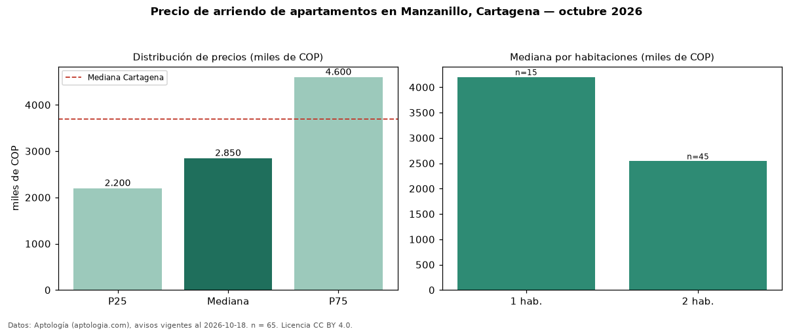

Precio de arriendo de apartamentos en Manzanillo, Cartagena — octubre 2026
Con 65 avisos vigentes, el canon mediano de apartamentos en arriendo en Manzanillo, Cartagena es COP 2,85 millones al mes. Eso es 23 % por debajo de la mediana de Cartagena para apartamentos (COP 3,70 millones). Por metro cuadrado, la mediana es COP 43.923/m² al mes (n = 64 avisos con área), 0 % por debajo de Cartagena (COP 44.118/m²). Por precio mediano es el puesto 12 de 14 barrios de Cartagena con al menos 30 avisos de apartamentos en arriendo (COP): entre las más económicas. Con el precio por m² de venta del mismo segmento (COP 11,98 millones/m²), la rentabilidad bruta implícita es 4,4 % anual (aproximación con medianas de ofertas distintas). El área mediana anunciada es 62 m². El segmento con más oferta es el de 2 habitaciones (45 avisos, mediana COP 2,54 millones); pasar de 1 habitación a 2 habitaciones cambia la mediana −40 %. La administración mediana declarada es COP 350.000 al mes (n = 35), aparte del canon. Datos: Aptología (aptologia.com), CC BY 4.0 — https://www.aptologia.com/arriendo/cartagena/manzanillo. Archivos: PDF, CSV con las cifras y gráfica PNG.

| Avisos únicos | 65 |
|---|---|
| Percentil 25 | COP 2.200.000 |
| Mediana | COP 2.850.000 |
| Percentil 75 | COP 4.600.000 |
| Mediana por m² | COP 43.923 |
Fuente: avisos vigentes de portales inmobiliarios recopilados por Aptología, deduplicados (mínimo 30 avisos únicos por celda). Precios pedidos, no cerrados. Fecha: 2026-10-18.